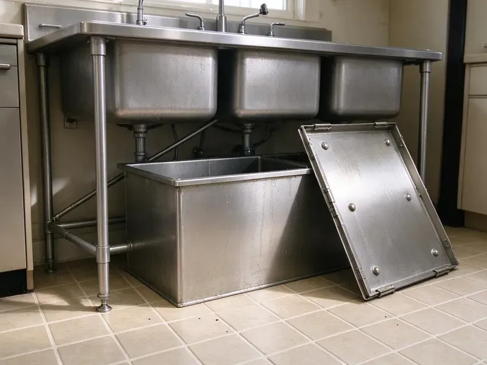

Insinkerator Installation in Bennington, VT
CKV Plumbing offers quality Insinkerator installation across Bennington, VT, upgrading your kitchen with a dependable and efficient waste disposal system.
- Same-Day InSinkErator Installs
- Experienced Plumbers
- Upfront pricing
- Fast, Local Service

Professional Insinkerator Installation in Bennington, VT.
Our team is ready to provide prompt and reliable Insinkerator installation for your home or business.
Insinkerator Installation Done Right in Bennington, VT
At CKV Plumbing, we understand the importance of a properly functioning kitchen, which is why we offer top-tier Insinkerator installation services across Bennington, VT. We work with all models, making sure your new garbage disposal fits right in with your existing plumbing.
Our expertise includes:
- Proper mounting and vibration reduction
- Hardwired, plug-in and switch-mounted air button setups
- Badger, Evolution and Pro series models from 1/3 to 1 HP

Additional Kitchen Plumbing Services in Bennington, VT
Our kitchen plumbing services in Bennington, VT cover sinks, disposals, dishwashers, and grease traps so your kitchen keeps running without backups or leaks.


Customers
Why Choose CKV Plumbing for Insinkerator Installation in Bennington, VT?
An InSinkErator only performs as well as its install, and a crooked mount or low trap arm causes leaks and slow drains. Our plumbers set every unit level, sealed and properly tied in to the existing drain line.
- Customer Satisfaction, Your satisfaction is our priority, and we stand by our work with solid guarantees and attentive service.
- Reliable Function, We test every new Insinkerator thoroughly to confirm proper operation, grind efficiency, and leak-free performance.
- Right-Sized Motors, We recommend horsepower based on household size, cooking habits and whether you use a septic system.
Citywide Coverage
From downtown to the farthest reaches of Bennington, we provide comprehensive Insinkerator installation services. Our local knowledge ensures we understand the plumbing needs of homes across the entire area.
Experienced Team
Each plumber on our team is a veteran professional, highly skilled in Insinkerator installations. They understand the details of electrical wiring, drain connections, and mounting systems unique to these units, ensuring a clean setup.
Safety-First Approach
We focus on safe and compliant Insinkerator installations, carefully checking all electrical circuits, grounding, and drain connections. Our work meets all local Bennington, VT building codes, providing you with a secure and trouble-free operation.
Trusted Certified Bennington Plumbing Services Professionals
At CKV Plumbing, we take pride in providing certified plumbing services throughout Bennington, VT. Backed by leading industry credentials, our experienced plumbers combine technical skill with genuine customer care. Whether it is repair, installation, or maintenance, we follow strict safety and quality standards to deliver long-lasting results you can trust.
Call Us Now PHCC Plumbing Contractor Recognition
PHCC Plumbing Contractor Recognition Better Business Bureau (BBB) Accreditation
Better Business Bureau (BBB) Accreditation Angi Certified Pro
Angi Certified Pro ISO 9001 Quality Management Certification
ISO 9001 Quality Management CertificationReliable Insinkerator Installation Services in Bennington, VT
Cost-Effective Insinkerator Installation in Bennington, VT
CKV Plumbing provides cost-effective Insinkerator installation services across Bennington, VT. While the cost of the unit itself varies by model, our labor rates are fair and transparent. We help you choose a unit that fits your budget and needs, then provide a clear, upfront quote for the installation. Our goal is to offer high-quality service without unexpected charges, so you get the best value for your investment.

Disposal Replacement and Haul-Away in Bennington, VT
When an old disposal hums, leaks from the bottom or trips the reset button constantly, replacement is usually smarter than repair. We remove the failed unit, clean the old putty off the sink and install a new InSinkErator in its place. If your old mount is an InSinkErator quick-lock, we can often reuse it to save time. We haul the old unit away so you are not stuck getting rid of it. Most replacements finish in a single visit.
InSinkErator Installation Cost Comparison in Bennington, VT
A basic Badger 5 install with a cord kit usually costs less than a premium Evolution Excel installation. Labor is similar for most swaps, but first-time installs cost more because of new flange work and electrical runs. We give you an upfront price that includes the unit, labor and haul-away. We also compare horsepower, sound levels and warranty length side by side. That way you can choose the model that fits your budget and cooking habits.
Evolution Series Upgrades in Bennington, VT
Evolution models like the Compact, Septic Assist and Excel use multi-stage grinding and extra sound insulation. They break down fibrous foods such as celery and corn husks that can jam lighter units. We install Evolution disposals for families who cook often and want a quieter kitchen. Because these units are taller and heavier, we check cabinet clearance and trap height before mounting. The result is a smoother grind and fewer clogs downstream.
Commercial Insinkerator Installation in Bennington, VT
Beyond residential services, CKV Plumbing also offers commercial Insinkerator installation for businesses in Bennington, VT. Commercial-grade disposals are built for heavier use and require specialized plumbing and electrical setups. We install heavy-duty units designed to handle the demands of restaurants, cafes, and other food service establishments, maintaining compliance with commercial plumbing codes and minimizing disruption to your operations.
Upgrading Your Insinkerator in Bennington, VT
If you're upgrading from an older, less powerful garbage disposal to a newer, more robust Insinkerator model, we can help. This service often involves removing the old unit, assessing the existing plumbing and electrical for compatibility, and installing the new, more powerful disposal. We make sure the new unit fits correctly under your sink and that the drain line can handle increased output. Upgrading can greatly improve your kitchen's waste management in Bennington, VT, especially with tougher food scraps.
Replacement of Existing Garbage Disposals in Bennington
If your current garbage disposal in Bennington is failing, we provide prompt replacement services, often with an Insinkerator unit. We begin by safely disconnecting and removing the old disposal, carefully cleaning the sink flange area to prepare for the new installation. Our team then installs your chosen Insinkerator model, making all necessary electrical and plumbing adjustments. We ensure the new unit integrates cleanly with your existing sink and drainage system, preventing future issues.

Insinkerator Evolution Series Installation in Bennington
For those seeking advanced grinding technology and quieter operation, the Insinkerator Evolution series is an excellent option. Our plumbers are experienced with Evolution models like the Essential, Compact, and Excel. These units often require specific electrical considerations and careful plumbing connections due to their larger size and more complex features. We make sure your Evolution series disposal operates at peak efficiency and with minimal noise in your Bennington kitchen.
Insinkerator Installation Near Me in Bennington, VT
Our technicians live and work in the area and know the kitchen layouts common to local homes. They arrive with the mounting hardware, cord kits and drain fittings the job needs. You get a professional install without the hassle of a big-box store appointment.
CKV Plumbing is your trusted local expert for Insinkerator installation throughout Bennington. We are known for fast response times and providing high-quality workmanship right to your doorstep. For dependable plumbing services nearby, call us today.
CKV Plumbing at a Glance
- Fully licensed plumbing team covering Bennington, VT
- Same-day appointments and 24/7 emergency response
- Upfront, flat-rate pricing before work begins
- 4.8-star rated by 553+ Vermont customers
Bennington Map
Bennington Information
- Population
- 8,795
- Area codes
- Local
- Service area
- Bennington and communities within 40 miles
- Nearby
- Brattleboro, Rutland, Middlebury, Barre
Mineral buildup and older drain lines in many homes make a right-sized and correctly mounted InSinkErator essential for avoiding scale, clogs and leaks under the sink.
Expert Services
Trust our professionals for reliable CKV Plumbing solutions in Bennington, VT.
Our Specialized Plumbing Services in Bennington, VT
At CKV Plumbing, we provide a complete range of plumbing services across Bennington, VT. From leak detection to full system installations, our team ensures fast, precise, and affordable service for both residential and commercial properties. Explore our core services below:


How Our Insinkerator Installation Process Works in Bennington, VT
At CKV Plumbing, we follow a clear, step-by-step process for every Insinkerator installation, guaranteeing quality results for your Bennington, VT home.
Request a Quote
Call us at (802) 209-5139 to discuss your Insinkerator installation needs and receive a transparent, no-obligation quote. We'll gather details about your existing setup or new project.
On-Site Assessment
Our plumber will visit your Bennington home to assess your kitchen sink, plumbing, and electrical connections. We confirm the best Insinkerator model for your needs and verify compatibility.
Professional Installation
We carefully install your new Insinkerator, providing proper mounting, secure electrical wiring, and watertight plumbing connections. The unit is tested fully for optimal performance.
Frequently Asked Questions About Insinkerator Installation in Bennington
The cost for Insinkerator installation in Bennington, VT typically ranges from $200 to $400 for labor, not including the unit itself. This can vary based on the complexity of the installation, such as electrical modifications or new plumbing runs, and whether an old unit needs to be removed. We provide upfront pricing after reviewing your specific situation.
In most cases, a simple like-for-like replacement of a garbage disposal does not require a permit in Bennington. However, if new electrical circuits are being installed or significant plumbing alterations are made, a permit may be required. We will let you know if your specific installation requires one.
We install all popular Insinkerator models, including the Badger series (Badger 1, 5), the Evolution series (Essential, Compact, Excel), and other specialized units. Our plumbers are trained to handle various sizes and power levels to meet your kitchen's needs.
For light use, a Badger 5 or Badger 5XP works well. Families who cook a lot or want a quieter unit should consider an Evolution Compact or Excel. Homes on septic should consider the Evolution Septic Assist.
Yes, but hard water can scale grind components and drain lines over time. Running cold water during use and periodic cleaning help, and stainless grind parts on higher-end models last longer.
Constant humming without grinding, leaks from the bottom of the unit, frequent tripping of the reset button and rusty water are all signs of failure. If the unit is more than 10 years old, replacement is often the better value.
The Badger series are entry-level, reliable disposals for basic grinding needs. The Evolution series offers advanced multi-stage grinding, quieter operation, and larger capacities, designed for tougher food waste and a quieter kitchen. Your choice depends on your usage and budget.
A straight swap usually takes about one hour. First-time installations or jobs that require new wiring or drain changes can take two to three hours.
What People Are Saying About Our Plumbing Experts?

Robert G.
The trenchless sewer replacement saved our front yard. They walked us through the camera inspection footage first so we knew exactly what we were paying for.
Sewer Line Replacement · Montpelier, VT
Daniel K.
A pipe burst at 11 pm and they actually answered. The plumber showed up within the hour, shut everything down, and had us back to normal the next morning. Could not ask for more.
Emergency Plumbing · Barre, VT
Mark T.
When our office needed drain cleaning, CKV Plumbing provided quick, reliable service. The plumber arrived on time and made sure every drain flowed perfectly before leaving. Very satisfied.
Drain Cleaning · Rutland, VT
Patricia H.
We had a slab leak that two other companies could not find. CKV Plumbing located it in under an hour, explained our options, and the price matched the quote to the dollar.
Slab Leak Repair · Barre, VTJames P.
Our commercial plumbing system had a leak under the sink, and CKV Plumbing handled it professionally. The plumbers arrived quickly and restored everything without disruption to our customers.
Commercial Plumbing · Rutland, VT
Sofia M.
Two new toilets installed in one visit, no mess left behind, and the tech even adjusted a faucet he noticed was dripping. Fair pricing and really friendly.
Toilet Installation · Montpelier, VT